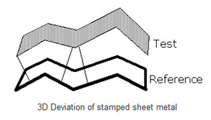
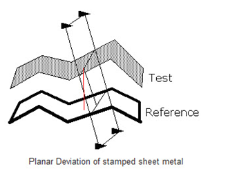
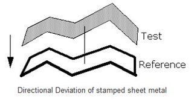

ComparePointsToMesh¶
Compares a reference mesh model and a test points object. To compare two mesh objects, convert the test object to Points using CreatePointsFromMesh or PointCover. The result is represented as MeshCompareInfo object.
Comparison types
ComparisionType_Regular3D and ComparisionType_Orthogonal3D
ComparisionType_Planar
ComparisionType_Directional
-
class
ComparePointsToMesh(*args)¶ Bases:
geomagic.api.v3.swig.MeshModifyAttributes
Name
Read only
Type
Range
Default Value
Usage hints
Description
mesh
No
None
Input (required)
Mesh object to be used as the reference in the comparision.
points
No
None
Input (required)
Points object to be used as the test in the comparision.
algorithmType
No
int0 - 2
AlgorithmType_Sparse
Input (optional)
Algorithm to use in the 3D comparison. This is used to tune the comparison based on the input data. Options are AlgorithmType_Dense and AlgorithmType_Sparse
comparisonType
No
enumerationComparisonType_Regular3D
Input (optional)
Comparison type - ComparisonType_Regular3D, ComparisonType_Orthogonal3D, ComparisonType_Directional, or ComparisonType_Planar
comparisonVector
No
[0.00 0.00 0.00]
Input (optional)
Comparison
vectorfor directional and planar comparisoncriticalAngle
No
double0.000000 - 180.000000
45.000000
Input (optional)
The maximum difference between the normals of two points that suggest they lie on different faces. Only applies if the test Points object has normals.
maxDeviation
No
double0.000000 - +INF
+INF
Input (optional)
Specifies the largest deviation that will be reported. Any deviation beyond this will be not be stored in the result.
orientedNormals
No
boolTrue
Input (optional)
If set to False, normals of the points object are considered to be not oriented. Otherwise, consider them as oriented if the points object indicates that they are.
selection
No
None
Input (optional)
If this is set then the comparison will be limited to the triangles in the selection.
spacing
No
double0.000000 - 1.000000
0.500000
Input (optional)
Spacing coefficient, affects algorithm performance for larger datasets; helps if it is larger for large deviations for non-sparse algorithm.
comparisonResult
Yes
None
Output
The resulting data object containing info comparing the points to the mesh.
criticalDeviationAngle
No
double-180.000000 - 180.000000
-1.000000
Property Documentation missing.
criticalDeviationLength
No
double-INF - +INF
-1.000000
Property Documentation missing.
Constants
Name
Description
AlgorithmType_Dense
This is better for larger number of points and smaller expected deviations.
AlgorithmType_Sparse
This is faster for smaller number of test points and large expected deviations.
ComparisonType_Directional
Compute directional 3D deviations
ComparisonType_Orthogonal3D
Compute 3D deviations, report reference normal distances
ComparisonType_Planar
Compute planar 3D deviations
ComparisonType_Regular3D
Compute 3D deviations, report deviation lengths
Methods
-
AlgorithmType_Dense= 0¶
-
AlgorithmType_Sparse= 1¶
-
ComparisonType_Directional= 2¶
-
ComparisonType_Orthogonal3D= 1¶
-
ComparisonType_Planar= 3¶
-
ComparisonType_Regular3D= 0¶
-
__init__(mesh::ComparePointsToMesh self) → ComparePointsToMesh¶ __init__(mesh::ComparePointsToMesh self, Mesh m) -> ComparePointsToMesh
Compares a reference mesh model and a test points object. To compare two mesh objects, convert the test object to Points using CreatePointsFromMesh or PointCover. The result is represented as MeshCompareInfo object.
-
property
algorithmType¶
-
property
comparisonResult¶
-
property
comparisonType¶
-
property
comparisonVector¶
-
property
criticalAngle¶
-
property
criticalDeviationAngle¶
-
property
criticalDeviationLength¶
-
property
maxDeviation¶
-
property
mesh¶
-
property
orientedNormals¶
-
property
points¶
-
property
pts¶
-
run(ComparePointsToMesh self)¶
-
property
selection¶
-
property
spacing¶
-
Examples
Create a point cover of a sample mesh and compare it against the mesh.
from geomagic.api.v3 import *
# Create a mesh, m, and a point cover over it, p
m = createRefinedTetrahedron()
ptCover = CreatePointCover(m)
ptCover.generateNormals = True
ptCover.offset = 0.001
ptCover.targetNumPoints = 10000
ptCover.run()
p = ptCover.points
# Compare points in p against the mesh m
compare = ComparePointsToMesh(m)
compare.points = p
compare.maxDeviation = 0.01
compare.spacing = 0.25
compare.comparisonType = compare.ComparisonType_Regular3D
compare.algorithmType = compare.AlgorithmType_Dense
compare.criticalAngle = 45.0
compare.run()
# The result is represented by a MeshCompareInfo type object
comp3dinfo = compare.comparisonResult